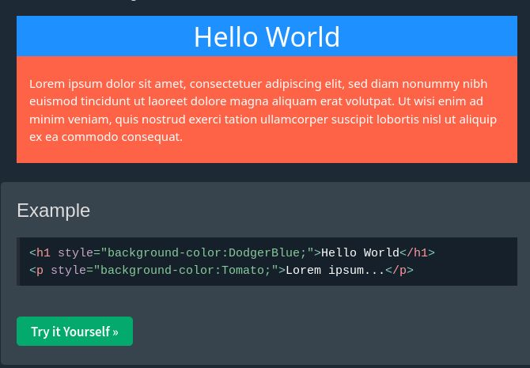
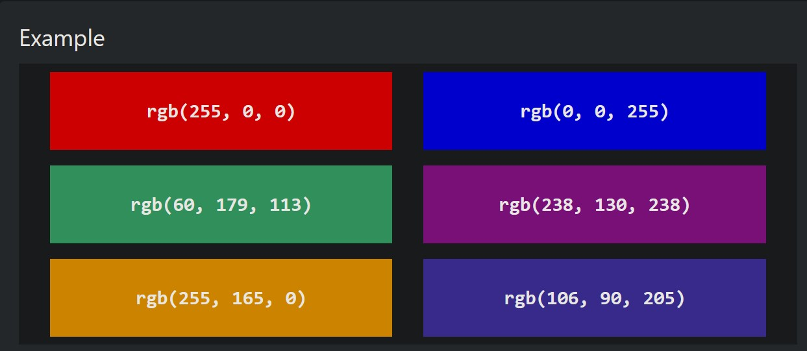
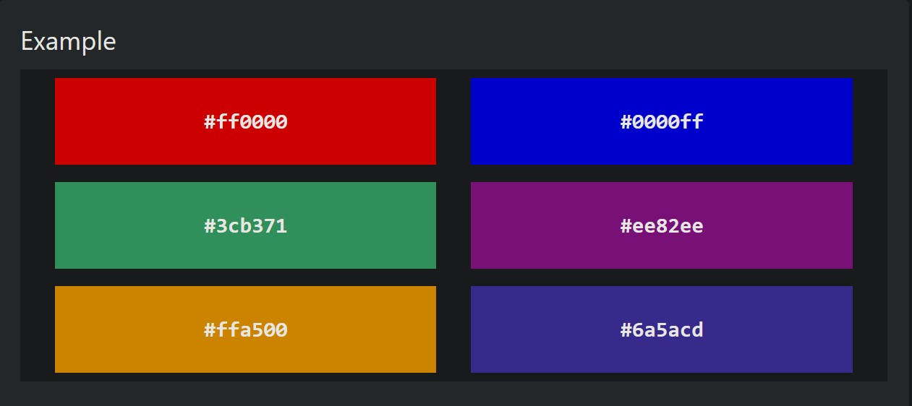
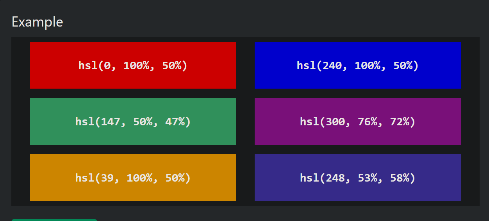
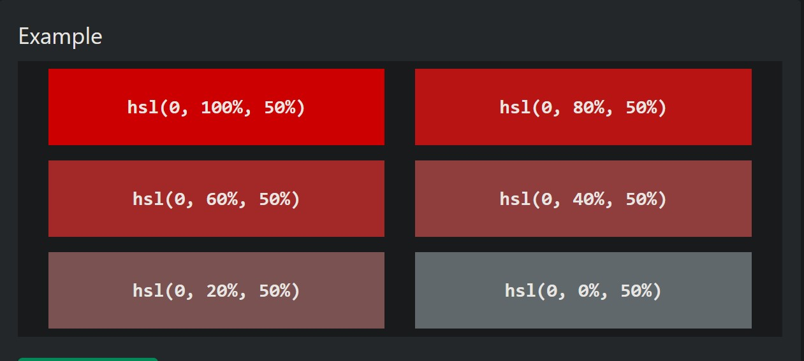
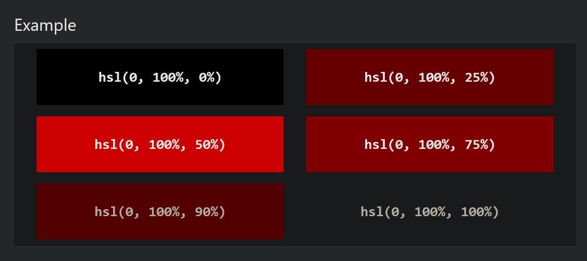

En css se puede poner un color usando un nombre prederterminado
Ejemplos de colores por nombre
Color Tomato
Color Orange
Color DodgerBlue
Color MediumSeaGreen
Los coloeres de fondo se pueden ponear en varias cajas de css colo en los titulos, parrafos, divs, etc...
RGB son las siglas en ingles de (Red,Green,Blue) que son los parametros que se utilizan para representar todo el espectro de color,van del 0 al 255 en los 3 apartados.
Si se pone (255,0,0) El color va a ser rojo
Si se pone (0,0,255) El color va a ser azul
Si se pone (0,255,0) El color va a ser verde
Ejemplos de colores RGB
En css, los colores se puden seleccionr usando valores hexadecimales como: #rrggbb
Donde rr (red),gg (green) y bb (blue) son valores hexadecimales igual a 00 y ff (lo msmo que en RGB de 0-255)
Por ejemplo, #ff0000 en pantalla es rojo, por que rojo es el unico valor puesto con un valor (ff) y los otros valores estan puestos en (00) lo que quiere decir que no estan.
El color negro se hace poniendo todos los valores en 0, asi: #000000
El color blanco se hace poniendo todos los valores en su maximo, que es ff, asi: #ffffff
Ejemplos de colores hexadecimales en css
En css tambien se puede utilizar el formato HSL para representar colores
hsl(hue,saturation,lightness)
Hue: el tinte o hue en ingles se usa del 0 a 360 grados donde 0 es el color rojo, 120 es el color verde y 240 el color azul
Saturaion es un porcentaje el cual va de 0% que es un color mas grisacio, y el 100% que es el color al maximo.
lightness: es otro porcentaje que ca de 0% que es negro, 50% es un termino medio entre claros y oscuros, y 100% que es la maxima iluminacion blanca
Ejemplo de como crear algunos color con hsl
Ejemplo de como se usa la saturacion
Ejemplo de como se una la ilumincaion o lightness en hsl
